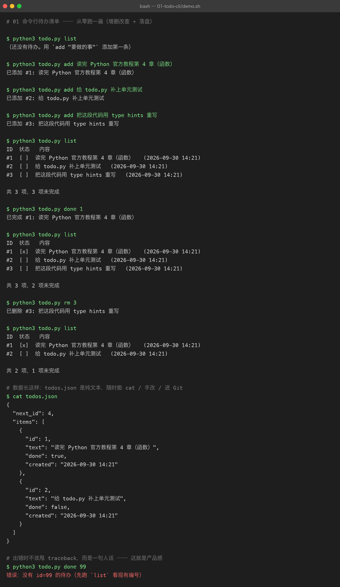

01 命令行待办清单
难度 ●○○ 入门 ｜ 预计 1 个周末 ｜ 依赖 无（纯标准库） 上级目录：练手项目总览
你要做的东西
一个在终端里跑的待办清单：增 / 删 / 改（标记完成）/ 查，数据存本地 JSON 文件，关掉终端再打开还在。
听起来简单，但它一次性覆盖了 Python 入门阶段最容易「看会了但写不出」的四件事：
- 数据结构 —— 列表（
list）+ 字典（dict）+ 自定义对象（dataclass）怎么组合 - 文件读写 —— 把内存里的对象序列化成 JSON 存盘，再读回来
- 命令行入口 ——
argparse做子命令，而不是靠sys.argv[0]硬猜 - 错误处理 —— 用户输错 id 时给一句人话，而不是甩一堆 traceback
为什么第一个项目刻意不用任何第三方库：框架会替你处理掉上面大部分细节（FastAPI 帮你解析参数、pandas 帮你读文件）。先用标准库把它们亲手做一遍，之后再用框架，你才知道框架到底帮你做了什么——这是本仓库
projects/里 10 个大项目反复强调的态度。
先看结果
下面这张图是 demo.sh 真实跑出来的（不是画的，也不是手截的）：

一屏里发生了三件事：
- 增删改查全流程：
add三条 →list→done 1打勾 →rm 3删除。注意每次操作后列表的「共 N 项，M 项未完成」都在正确变化。 - 数据落地：
cat todos.json打出真实文件内容——你能看到next_id和items的结构，这就是「内存对象 → 磁盘文本」的往返结果。 - 报错也是输出的一部分：最后一行
todo.py done 99故意输了个不存在的编号，程序没有崩，而是打印错误：没有 id=99 的待办（先跑 list 看现有编号）。退出码是1，可以被 shell 脚本判断。
你要学到的 Python
| 知识点 | 在本项目里落在哪 |
|---|---|
dataclass | Item 类，自动生成 __init__ / __repr__ / __eq__ |
list / dict 组合 | Store.items 是 list[Item]，落盘时转成 list[dict] |
pathlib.Path | 所有文件路径操作，比 os.path 的字符串拼接可读得多 |
文件读写 + encoding | path.read_text(encoding="utf-8")，中文不乱码的关键 |
json 序列化 | json.dumps(...) / json.loads(...)，以及 ensure_ascii=False |
argparse 子命令 | add / list / done / rm 四个子命令 + --file 全局参数 |
| 自定义异常 | TodoError，区分「用户输错」与「程序 bug」 |
| 退出码 | main() 返回 int，raise SystemExit(main()) |
from __future__ import annotations | 让老版本 Python 也能写 list[Item] 这种注解 |
怎么跑起来
cd python-practice/01-todo-cli
python3 todo.py list # 看当前列表（首次是空的）
python3 todo.py add "读完 Python 官方教程第 4 章" # 新增
python3 todo.py done 1 # 标记完成
python3 todo.py rm 1 # 删除
python3 todo.py --file /tmp/x.json list # 换个数据文件（方便多套待办）想复现上面那张截图，跑演示脚本即可（它会在结束时清理自己产生的 todos.json）：
bash demo.sh # 看输出
bash demo.sh > assets/run.txt # 存原始输出（截图就是从它渲染的）代码结构
01-todo-cli/
├── todo.py # 全部实现（~200 行，含注释）
├── demo.sh # 可复现演示：跑一遍完整流程并打印
├── assets/
│ ├── run.txt # demo.sh 的真实输出（截图的原素材）
│ └── term-01-todo-cli.png
└── README.md # 本文件todo.py 内部只分三层，刻意做薄：
argparse 解析参数 → Store（业务 + 落盘） → Item（一条数据）
↑ 只管打印人话 ↑ 只管读写文件 ↑ 只是个容器分层的意义：Store 不打印任何东西、main() 不碰任何文件。所以你可以直接给 Store 写单元测试，不需要模拟终端输入输出——这正是「进阶挑战」里的第 1 题。
关键代码拆解
① 为什么用 TodoError 而不是直接 raise Exception
class TodoError(Exception):
"""用户级错误：打印一句话即可，不需要 traceback。"""在 main() 里统一兜底：
try:
...
except TodoError as exc:
print(f"错误：{exc}", file=sys.stderr)
return 1 # ← 退出码 1，脚本里可以 if 判断代码里其他地方出现意料之外的异常（比如真有 bug），就会照常抛出堆栈——该炸的炸，该讲人话的讲人话，这个边界感比「全都 try 住」重要得多。
② 落盘时为什么必须 ensure_ascii=False
self.path.write_text(
json.dumps(data, ensure_ascii=False, indent=2) + "\n", encoding="utf-8"
)json.dumps 默认会把中文转义成 \u5f85\u529e。计算机没意见，但你 cat 出来就完全看不懂了。加上 ensure_ascii=False + encoding="utf-8"，文件里才是原样的中文。
③ 读文件时把两种「异常情况」分开
if not self.path.exists():
return # 文件不存在 = 全新开始，不是错误
try:
raw = json.loads(self.path.read_text(encoding="utf-8"))
except json.JSONDecodeError as exc:
raise TodoError(f"{self.path} 不是合法 JSON（{exc.msg} @ 第 {exc.lineno} 行）...") from exc「没数据」和「数据坏了」是两回事。前者静默放过，后者必须让用户知道——而且要把 lineno 带上，不然用户根本不知道该改哪。
常见坑
| 坑 | 现象 | 怎么破 |
|---|---|---|
忘了 encoding="utf-8" | 在 Windows 上中文变乱码 / 报 UnicodeDecodeError | 所有 read_text / write_text 都显式写编码 |
每次操作都重开文件且没 save() | 程序退出后数据全没了 | 每处修改状态的末尾都调 self.save() |
用 os.path.join 拼字符串路径 | 可读性差、Windows 分隔符问题 | 用 pathlib.Path，Path("a") / "b.json" |
删除列表元素时遍历 for i in range(len(...)) | 索引越界 / 漏删 | 用 list.remove(obj) 或倒序删 |
done 一个已完成的项 | 状态没变化，用户以为没生效 | 显式报 早就完成了，而不是静默成功 |
验收标准（做完自检）
- [ ]
add后立刻list能看到新条目，编号递增且不会复用已删除的编号 - [ ] 关掉终端重新打开，
list数据仍在（说明真的落盘了） - [ ]
done 99/rm 99输入不存在的编号时，打印人话错误且退出码为 1（echo $?验证） - [ ]
todos.json里中文是可读的原文，不是\uXXXX - [ ] 手动把
todos.json改坏（删掉一个花括号），程序报「不是合法 JSON」而不是崩溃
进阶挑战（做完再往上加，别跳）
- 补单元测试 —— 给
Store写unittest：新增后len(items)变化、find找不到时抛TodoError、落盘再读回内容一致。测试要能python3 -m unittest直接跑。 - 加
--json输出模式 ——list --json输出机器可读的 JSON，方便被别的脚本消费。体会「同一个数据，两种渲染」。 - 加截止日期与排序 ——
add "写周报" --due 2026-10-07，list按截止日期排序，过期的标红。 - 加
edit子命令 —— 修改某条待办的文字。 - 中文对齐 —— 现在列表里中文和英文混排时列是对不齐的（中文字符在等宽字体里占两格）。想办法修好它（提示：
unicodedata.east_asian_width）。
做完挑战 1 之后，你就具备了给后面几个项目写测试的基础——
04-fastapi-blog会直接用pytest。